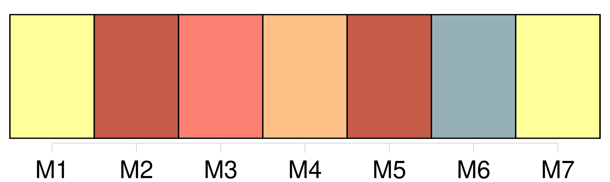
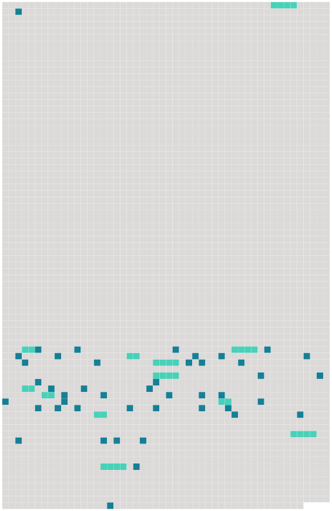

Longueur nb maillons : 57 mentions |
  |
En 1633, Mlle de Hautefort avait vu frapper et disperser tout l’ intérieur de la reine, Mme de Chevreuse, dont l’ intrépidité devait au moins lui plaire, chassée de la cour pour la deuxième fois, et [le chevalier de Jars] , condamné à mort, ne recevant [sa] grâce que sur l’ échafaud. [62 phrases] Elle savait qu’ il y avait là [un prisonnier] [qui] déjà une fois avait joué [sa] tête pour la reine, déployé dans les fers une constance magnanime, et [venait] à peine de descendre de l’ échafaud, [le chevalier de Jars] [Il] commençait un peu à respirer de cette terrible épreuve, on [lui] laissait quelque liberté, et [il] pouvait recevoir quelques personnes. La noble fille, jugeant [du chevalier] par elle -même, crut qu’ elle pouvait [lui] demander de jouer [sa] tête une seconde fois. Elle se donna pour la sœur de [son] valet de chambre, qui venait [lui] apprendre que cet homme était à la mort, et [l’] entretenir de sa part de choses pressantes. [Le chevalier de Jars] , [qui] savait [son] domestique en bonne santé, [répugnait] à se déranger pour une telle visite, et l’ altière Marie de Hautefort dut attendre quelque temps dans le corps de garde qui était à la porte de la Bastille, exposée aux regards et aux plaisanteries de tous ceux qui étaient là, et qui, à son costume, la prenaient pour une demoiselle très équivoque. [1 phrases] Enfin [le chevalier de Jars] se décida à venir. Ne la reconnaissant pas d’ abord, [il] allait la traiter assez mal, lorsque, [le] tirant à part et entrant avec [lui] dans la cour, pour toute réponse à ses propos, elle leva sa coiffe, et [lui] montra cet adorable visage qu’ on ne pouvait oublier quand on l’ avait vu une fois : « Ah!! [2 phrases] » s’ écria [le chevalier] Elle [le] fit taire, et [lui] expliqua en peu de mots ce que la reine [lui] demandait. [1 phrases] Elle remit cette lettre [au chevalier] en [lui] disant : « Voilà, [monsieur] , ce que la reine m’ a donné pour [vous] ; il faut employer [votre] adresse et [votre] crédit dans ce lieu -ci pour faire arriver cette lettre jusqu’ à ce prisonnier. Je [vous] demande beaucoup, mais j’ ai compté que [vous] ne m’ abandonneriez pas dans le dessein que j’ ai de tirer la reine de l’ extrême péril où elle est. » [Le chevalier] , tout intrépide qu’ [il] était, fut bien étonné de voir qu’ il était question de hasarder de nouveau [sa] vie. [Il] balança, [il] songea longtemps. Mlle de Hautefort, [le] voyant chanceler, [lui] dit : « Eh quoi!! [vous] balancez, et [vous] voyez ce que je hasarde!! [2 phrases] lui répondit [le chevalier] , il faut donc faire ce que la reine demande ; il n’ y a point de remède ; [je] ne fais que sortir de dessus l’ échafaud, [je] vais m’ y remettre. [2 phrases] [Le chevalier de Jars] fit des merveilles. [Sa] chambre était de quatre étages au-dessus du cachot de La Porte ; [il] perça [son] plancher, et [fit] passer la lettre de la reine au bout d’ une corde, avec prière au prisonnier de la seconde chambre d’ en faire autant, puis successivement jusqu’ à la dernière où était La Porte, en recommandant bien le plus profond secret. [1 phrases]
La fermeté qu’ avait d’ abord montrée La Porte eût tourné contre la reine, si à la fin elle n’ eût été éclairée et guidée par la lettre qui parvint jusqu’ à lui, grâce à la courageuse industrie [du chevalier de Jars] , [dont] le dévouement était dû à celui de Mlle de Hautefort. [5 phrases] Est -il besoin de dire de quelle vive reconnaissance la reine fut pénétrée pour [Jars] , pour La Porte, et surtout pour sa jeune et intrépide amie, et quelles promesses elle lui fit, si jamais elle voyait de meilleurs jours?? |
 |
La ressource peut être téléchargée sur la page Ortolang
Si vous avez des questions ou vous voyez des erreurs, merci d'envoyer un mail à silvia.federzoni89@gmail.com
Site développé par S. Federzoni (contact)